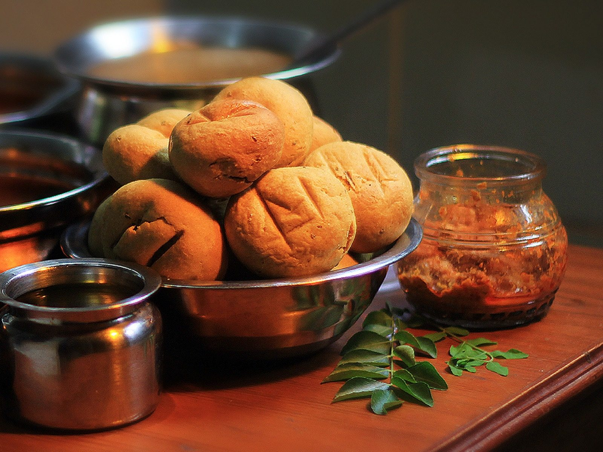

Dal Baati Churma
Baked wheat balls drowned in ghee, with a five-lentil dal and sweet crushed churma

Allergens in Dal Baati Churma: milk, gluten, tree nuts.
Ingredients
Quantities for 4.
- 3 cups, coarse Atta
- 2 tbsp Ravafor crunch in the baatioptional
- 200g Gheethis is not a dish to economise on
- 1 tsp Ajwain
- 1/2 cup Toor Dal
- 1/4 cup Chana Dal
- 1/4 cup Moong Dal
- 1/4 cup Urad Dal
- 1/4 cup Masoor Daloptional
- 1, chopped Onionoptional
- 2 Tomato
- 1 tbsp Ginger
- 6 cloves Garlicoptional
- 1 tsp Cumin Seeds
- a pinch Asafoetida
- 1 tsp Turmeric
- 1 tsp Chilli Powder
- 1 tsp Coriander Powder
- 1/2 tsp Garam Masala
- 1/2 cup Jaggeryfor the churma
- 1/2 tsp Cardamomoptional
- 2 tbsp Almondsfor the churmaoptional
- to taste Salt
Cookware
stovetop, oven, pressure cooker
Checked against the ingredient list for ten allergens: milk, egg, fish, crustaceans, tree nuts, peanuts, sesame, mustard, soy and gluten. Brands vary, so read the label on anything new to you.
Before you start
- Baati dough is stiff and barely hydrated. Nothing like chapati dough. If it feels soft, it is wrong.
- The baatis are dunked in melted ghee straight from the oven. Skipping that leaves them dry and hard.
Method
- Make a stiff dough from atta, rava, ajwain, salt and 4 tbsp ghee with as little water as possible. Rest 20 minutes.
- Shape into balls, press a dimple into each, and bake at 200C for 35-40 minutes, turning once, until cracked and deep golden.The cracks are what let the ghee in later. Do not smooth them over.
- Meanwhile pressure cook the mixed dals with turmeric and salt until soft, 4 whistles.
- Temper cumin and asafoetida in ghee, add ginger, garlic and onion, then tomato and the powdered spices. Cook until the fat separates, then fold into the dal and simmer 10 minutes.
- For the churma, crush a few baatis coarsely and work in jaggery, cardamom, chopped almonds and hot ghee.
- To serve, dunk each hot baati in melted ghee, break it open into the dal, and eat with churma on the side.
Storage
Baatis keep 2 days in an airtight tin and reheat well in a hot oven. The dal keeps 3 days refrigerated and thickens. Churma keeps a week.
Nutrition Good estimate
One serving of Dal Baati Churma (357 g) is about 1215 calories, or 341 calories per 100 g.
Medium protein: 30 g a serving, 10% of the calories
| Per serving357 g | Per 100 g | |
|---|---|---|
| Calories | 1215 kcal | 341 kcal |
| Protein | 29.9 g | 8 g |
| Carbohydrate | 156.4 g | 44 g |
| of which sugars | 31.9 g | 9 g |
| Fibre | 26.4 g | 7 g |
| Fat | 57.7 g | 16 g |
| of which saturated | 32.0 g | 9 g |
| of which unsaturated | 22.3 g | 6 g |
Nearest database match used for garam masala, jaggery, urad dal. Estimated from raw ingredients using USDA FoodData Central.
More like this: Vegetarian Indian recipes · Rajasthani recipes
Times, yields, allergens and nutrition are guidance. Use your own judgement on doneness and on storing. More in About.